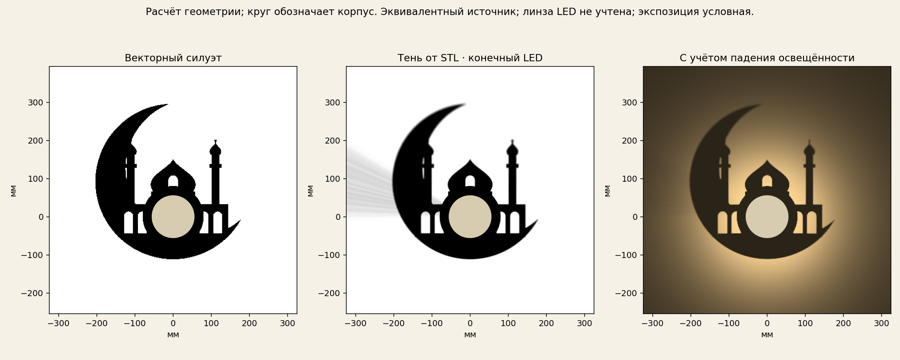
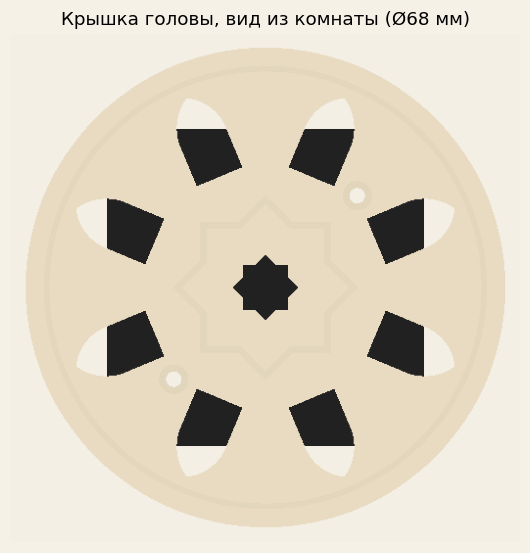
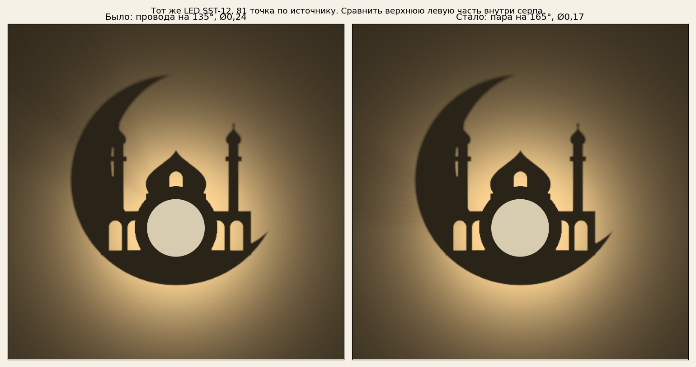
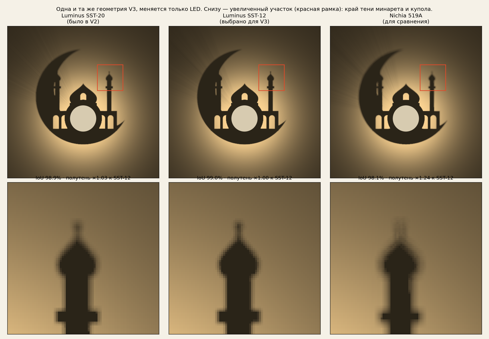

← Все варианты лампы · Комплектующие и где купить
Hilal Open V3. Тестовая сборка.
Пять печатных деталей, включая декоративную крышку со звездой; сплошной объём STL ≈93,5 г PETG. Изменён держатель головы. LED Luminus SST-12 3000K CRI95, драйвер 380 мА без режимов, плата прижата к алюминию 45 × 45 мм винтами через термопасту, центрирующее кольцо платы. Батарейки в комплект не входят.
Генератор своих рисунков (предыдущая конструкция)
Мышь — вращение, колесо — масштаб. SST-12 направлен к стене. Чёрная алюминиевая пластина 45 мм закрывает свет спереди и отводит тепло; короткая прозрачная втулка 10/6 × 20 мм держит голову. Бокового кронштейна нет. Освещение этого сборочного просмотра условное; расчётная тень показана в соседней вкладке.
Тяните мышью или пальцем — вращение камеры. Колесо или два пальца — масштаб. Стена и собранная лампа остаются неподвижны относительно источника. Тень — заранее рассчитанное поле света через STL и короткую PMMA-втулку; материалы корпуса и экспозиция условные.
16,4 млн лучей (81 точка по источнику) · круглый источник Ø1,74 мм (кристалл SST-12 × 1,4 — оценка увеличения куполом). Учтены провода и преломление втулки. Измеренной диаграммы LED нет. Инструкция и ограничения · Расчёт и силуэт


Финальная карта сравнения ещё не добавлена.
Результат сравнивается с прежним рисунком. IoU не отражает всю мягкую полутень от проводов. Область оценки, источник света и ограничения расчёта указаны справа; значения загружаются из файла результатов.
Комплектующие для одной тестовой лампы
Цены — как на страницах магазинов 09.11.2026, без доставки. Ссылки открываются в новой вкладке. LED и драйвер в Германии в розницу не нашёл: их везут из Гонконга (Kaidomain), к цене могут добавиться доставка и налог — проверьте в корзине. Всё остальное есть в немецких магазинах; BerryBase закрывает отсек, тумблер и провод одним заказом. Печатные детали — PETG, ≈94 г.
| Деталь | Кол-во | Цена | Откуда | Где купить |
|---|---|---|---|---|
| Световой узел | ||||
| LED Luminus SST-12 3000K CRI95, опция «20 mm DTP copper MCPCB» В Германии в розницу на плате не нашёл. Запасной вариант: SST-20 3500K CRI95 там же. | 1 (взять 2) | $0.99 + опция платы | ✈ из Гонконга | Kaidomain ↗ |
| Запасной LED: Luminus SST-20 3500K CRI95, 20 mm По расчёту почти не хуже SST-12. | — | см. страницу | ✈ из Гонконга | Kaidomain ↗ |
| Драйвер Nanjg 105C 17 mm: опции «1 x AMC7135» и «1 Mode (without MCU)» Заказать вместе с LED — одна посылка. | 1 | $4.12 | ✈ из Гонконга | Kaidomain ↗ |
| Прозрачная трубка PMMA 10/6 мм, бесцветная (режется на 20 мм) Хватает на много ламп. | 1 заготовка | €3.81 | 🇩🇪 Германия | Vitrinenschmidt ↗ |
| Эмалированный провод Ø0,15 мм (набор 7 цветов × 10 м) Красный и чёрный удобны для полярности. Дешевле — любой «Kupferlackdraht 0,15 mm» одним цветом. | 2 × 6 см | €18.90 | 🇩🇪 Германия | BerryBase ↗ |
| Тепло и крепёж | ||||
| Алюминиевый лист 400 × 200 × 2 мм (режется на 45 × 45) Или любой обрезок 2 мм. | 1 лист ≈ 32 пластины | цену не проверял | 🇩🇪 Германия | Hornbach ↗ |
| Термостойкая краска Dupli-Color Thermo, чёрная матовая 690 °C Только сторона пластины к комнате. С крышкой — обязательно. | немного | ≈€15 | 🇩🇪 Германия | eBay.de (есть в Bauhaus/OBI/Hornbach) ↗ |
| Винты M2 × 12, DIN 912 (цилиндрическая головка), чёрные V2A Головка Ø3,8 мм входит в углубление крышки. | 2 | €1.00/шт | 🇩🇪 Германия | eBay.de ↗ |
| Термопаста (любая компьютерная) Клей больше не нужен. | капля | — | любой магазин | есть дома / любой магазин электроники |
| 2К-эпоксид UHU Plus Schnellfest (вклейка трубки) Сначала проба на образце. | немного | — | 🇩🇪 Германия | Bauhaus ↗ |
| Питание | ||||
| Отсек 3 × AA Goobay 12445 с проводами и выключателем | 1 | €1.10–1.50 | 🇩🇪 Германия | BerryBase ↗ |
| Тумблер Goobay 10013, 2 Pin EIN–AUS | 1 | €0.60 | 🇩🇪 Германия | BerryBase ↗ |
| Аккумуляторы AA NiMH (например Eneloop) Не 14500 Li-ion. В комплект покупателю не входят. | 3 | — | любой магазин | любой магазин |
Инструменты: паяльник, мультиметр, ножовка по металлу, сверло 2,2 мм. Полный список и инструкция: shopping-list.md · README.md
Крышка головы со звездой
Восьмиконечная звезда Руб эль-Хизб гравирована в лицевую сторону, вокруг 8 стрельчатых арок, ещё 8 арок по бортику для воздуха. Печатается лицом на стол без поддержек, ≈12 г PETG. Держится теми же двумя винтами (M2×12). Крышка находится позади светодиода. Она добавлена после сохранённого расчёта тени; остальные STL совпадают с файлами расчёта. Физическая проверка сборки ещё не проведена.

Провода у LED: убраны «лучи»
Веер светлых и тёмных лучей давали два провода внутри прозрачной втулки. На 135° рисунок за корпусом светлый, поэтому тень проводов была видна. Теперь провода — тонкая пара 0,15 мм, стоят ребром к LED и развёрнуты на 165°: их жёсткая тень до 207 мм ложится на тёмные минарет и серп. Потеря света на светлой стене от проводов: 3,6% → 1,4%.

Выбор LED: расчёт
Одна и та же геометрия V3, меняется только светодиод. Видимый размер источника — оценка (кристалл × 1,4), не измерение.
| LED | Совпадение (IoU) | Полутень |
|---|---|---|
| Luminus SST-20 (было в V2) | 98.9% | ×1.03 |
| Luminus SST-12 (выбрано для V3) | 99.0% | ×1.00 |
| Nichia 519A (для сравнения) | 98.1% | ×1.24 |
| SST-12, сдвиг 0,5 мм | 94.8% | — |
Вывод: SST-12 и SST-20 почти равны; крупный кристалл (519A) размывает шпили и арки. Точная центровка LED важнее его модели, поэтому в держателе есть кольцо для платы.
